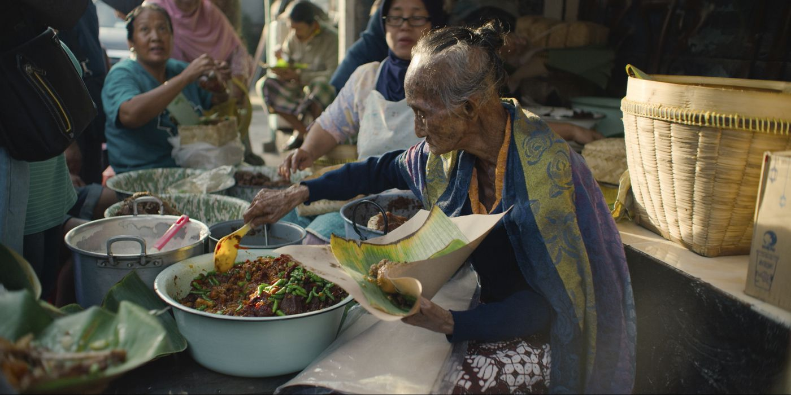

Street Food(2019)
January 3, 2020

This show was a wonderful experience. Each episode offered an inside
look into the differing cultures of countries all across Asia, and
an intricate view of the lives of the people who sell the street
food. Going into this show, I expected a typical documentary of a
western person going to asia and vlogging their experiences with the
street food. I was surprised however to find that instead of making
the process of the creation and selling of the food the focus of the
show, the street vendors themselves were the main focus. Speaking in
their native languages, they retold intricate stories of their life
and the events that led them to a life as a street vendor. I found
it best to watch the show with the original audio, turning on
subtitles. Though they were on by default, the english audio dub
didn’t capture the same first hand emotions and impact that the
native speakers did. Not all of the episodes hit the mark, as a few
were more boring or less personal than others. My favorite episodes
were the ones of Vietnam and Indonesia. Watching this with my
mother, who grew up in Vietnam, it was interesting to see her relate
to the accuracy and relive the experiences of her childhood. The
Indonesia episode contained some of the most personal stories, told
by vendors who were carrying generations worth of wisdom pertaining
to their craft. I ended this show with a much wider respect for
street vendors and a better understanding of the dedication they
have for their work.
Meg's Rating: 8.5/10
About Me

Hi! I'm Meglan. Star Wars, comic book, film, video game, and art nerd. I watch a lot of TV and movies, so here's my thoughts on a few of them. Enjoy!
Follow Me
Instagram: @meglanomera
Email: meglano03@gmail.com